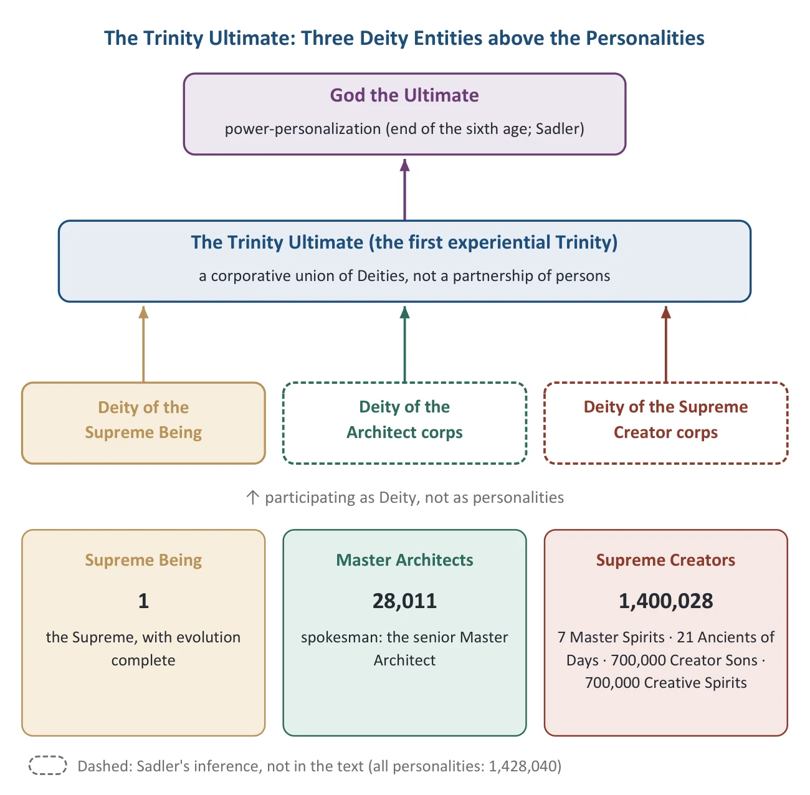

La première Trinité expérientielle
Original : Annexe X, La première Trinité expérientielle (pp. 307–322)
DANS CE CHAPITRE
La Trinité du Paradis est existentielle ; la Trinité Ultime est expérientielle. Cette nouvelle Trinité fonctionne déjà comme réalité qualifiée, mais elle ne sera factuellement formée que lorsque l’évolution de l’Être Suprême sera achevée. En dénombrant ses membres, Sadler trouve plus de 1,4 million de personnalités impliquées, et il soutient que cette taille même oblige à penser avec précision ce qu’est une trinité. Sa conclusion est qu’une trinité n’est pas une association de personnes, mais une union corporative de Déités, et que le corps des Architectes et le corps des Créateurs Suprêmes y prendront donc part chacun comme une seule entité de Déité.
1. Un être et deux groupes (orig., pp. 307–308)
La composition de la Trinité Ultime est donnée dans l’Introduction du Livre d’Urantia.
1. La Trinité Ultime, évoluant présentement, sera finalement constituée de l’Être Suprême, des Personnalités Créatrices Suprêmes et des Architectes absonites du Maitre Univers0:12.6
À première vue, elle parait triple, comme les deux autres Trinités. Dans la Trinité du Paradis, nous trouvons le Père, le Fils et l’Esprit ; dans la Trinité Absolue, Dieu le Suprême, Dieu l’Ultime et le Consommateur de la Destinée de l’Univers. Pourtant, cette « Trinité du milieu » est différente : elle n’est pas formée de trois êtres, mais d’un être et de deux groupes. Sadler fait effectivement le compte.
| Groupe | Nombre |
|---|---|
| Être Suprême | 1 |
| Architectes du Maitre Univers | 28 011 |
| Sept Maitres Esprits | 7 |
| Anciens des Jours | 21 |
| Fils Créateurs | 700 000 |
| Esprits Créatifs | 700 000 |
| Total | 1 428 040 |
Comment près d’un million et demi de personnalités peuvent-elles fonctionner au sein d’une seule trinité ? Sadler trouve ce nombre saisissant utile. Parce que la Trinité du Paradis a trois membres, nous avons tendance à confondre l’association personnelle du Père, du Fils et de l’Esprit (une triunité) avec la Trinité elle-même ; face à plus de 1,4 million de membres, une telle confusion devient impossible.
2. Qu’est-ce qu’une trinité ? (orig., pp. 308–311)
Triunité et Trinité
Sadler rassemble ce que les fascicules disent de la Trinité du Paradis et bâtit son argumentation sur la prémisse que les mêmes principes vaudront pour les autres trinités. Il commence par la triunité.
Une triunité n’est pas une entité. Elle est fonctionnelle plutôt qu’organique. Ses membres sont associés plutôt que corporatifs.104:3.16
Une trinité est autre chose.
La Trinité est une réalité de Déité qui dépasse la somme de ses parties, elle est issue de la conjonction des trois Déités Paradisiaques.104:2.4
Sadler traduit la différence dans le langage des affaires humaines. Une triunité ressemble à une association ou à un partenariat ; une trinité ressemble à une société. Une société n’est pas une personne, et pourtant elle est indéniablement une entité. Dans cet esprit, il appelle par jeu la Trinité du Paradis « Déité Indivise, Société Anonyme » (Undivided Deity, Incorporated).
| Aspect | Première Triunité | Trinité du Paradis |
|---|---|---|
| Définition | association personnelle du Père, du Fils et de l’Esprit | union de Déité du Père, du Fils et de l’Esprit |
| Caractère | partenariat, unanimité fonctionnelle | entité corporative |
| Fonctions | amour, miséricorde, ministère ; don de la personnalité, de l’esprit et du mental | administration de la justice, attitudes de totalité, supercontrôle cosmique |
| Champ d’intérêt | les créatures individuelles | des planètes entières, des univers entiers, tout le grand univers |
Les deux ensembles de fonctions ne se recouvrent pas. La bonté, la miséricorde et la vérité sont dispensées une à une par les personnes divines, mais la justice n’est l’attitude d’aucune d’elles prise isolément.
La justice n’est jamais une attitude personnelle, elle est toujours une fonction plurale.10:6.2
Le conseil d’administration
Une trinité n’est pas une personne, et pourtant elle n’est pas non plus contraire à la personnalité. Ses aspects personnels résident dans ses membres individuels, et ces membres, pris un à un, ne sont pas la trinité.
elles sont trinité seulement en tant que groupe. Ce groupe est la trinité106:5.3
Sadler compare cela au conseil d’administration d’une société. Les administrateurs peuvent mener leur propre vie tout à fait en dehors de la société, et la société, en tant qu’entité juridique, existe indépendamment de leurs affaires privées. Mais les administrateurs ne peuvent agir ensemble « en tant qu’administrateurs » en dehors de la société. Qu’une trinité ait trois membres ou un million, sa structure organique est une entité distincte de ses membres individuels.
Seule la Déité peut devenir trinité
La clé de la discussion est une seule phrase du fascicule 106.
Seul ce qui est déifié peut devenir une trinité ; toutes les autres associations sont des triunités ou des triodités.106:5.4
Sadler en tire une inférence décisive. Si le corps des Créateurs Suprêmes et le corps des Maitres Architectes s’unissent dans la Trinité Ultime, ils doivent le faire non comme des multitudes de personnalités, mais comme deux entités corporatives de Déité. De plus, puisque la fonction de trinité englobe toujours la réalité de Déité, et que la réalité de Déité cherche toujours la personnalisation [0:12.4], une nouvelle personnalisation de la Déité surgit comme conséquence de la trinité. C’est pourquoi la Déité expérientielle apparait dans l’univers.
3. Les trois membres reconsidérés (orig., pp. 312–316)
La Déité de l’Être Suprême
Le chiffre de 1,4 million compté plus haut n’est pas, à proprement parler, le nombre des membres. Selon Sadler, la Trinité Ultime n’a que trois membres, dont aucun n’est une personnalité. Le premier est relativement facile à saisir. Lorsque le deuxième âge de l’univers aura pris fin et que son évolution sera achevée, l’Être Suprême y prendra part non comme personne, mais comme Déité. Le membre est la Déité de la Suprématie, non la personnalité de Dieu le Suprême.
La Déité du corps des Architectes
Le deuxième membre est moins familier. Les Architectes sont 28 011 êtres superpersonnels, et pourtant la trinité n’a qu’un seul « membre architecte ». Ce membre doit donc être une entité de Déité qui représente, ou unit, l’esprit superpersonnel du corps tout entier, sa divinité absonite et son dessein pour le maitre univers. Sadler déclare clairement qu’il s’agit d’un concept nouveau sur lequel les fascicules ne disent rien ; il soutient seulement que c’est le seul concept compatible avec les faits connus. Si une telle entité avait besoin d’une « voix », on pourrait imaginer le doyen des Maitres Architectes parlant pour elle, à peu près comme le président parle pour un conseil d’administration.
La Déité du corps des Créateurs Suprêmes
Le troisième membre est plus difficile encore. Le corps des Architectes existe depuis le commencement, mais le corps des Créateurs Suprêmes est un groupe en évolution, né dans le temps et pas encore complet. Comment son entité de Déité pourrait-elle venir à l’existence ? Presque sans indication du texte, Sadler s’appuie sur la logique et rassemble ses indices.
Le premier indice est une expression tirée de la présentation de l’Être Suprême dans l’Introduction.
L’Être Suprême, s’actualisant maintenant dans les univers évolutionnaires, est la Déité qui met en corrélation et synthétise la divinité de l’espace-temps, la Déité trine du Paradis en association expérientielle avec les Créateurs Suprêmes du temps et de l’espace.0:7.9
Sadler pense que les mots « Déité trine du Paradis » ont été choisis avec une ampleur délibérée, signalant que les Créateurs Suprêmes ne se trouvent pas toujours dans une seule et même relation avec la Déité du Paradis. Les Esprits Réflectifs, par exemple, furent créés par une liaison de la Trinité du Paradis avec un seul Maitre Esprit [17:2.1], ce qui est la collaboration personnelle d’un seul Maitre Esprit. Pourtant, les sept Maitres Esprits peuvent aussi s’unir en une union septuple de Déité et se trouver ainsi associés à la fonction de trinité.
Aucun des Sept Esprits ne représente organiquement la Trinité du Paradis, mais, quand ils s’unissent en Déité septuple, cette union au sens de déité — mais non au sens personnel — équivaut à un niveau fonctionnel associable aux fonctions de la Trinité.16:3.16
Sadler pose ici une question. Cette union corporative de Déité des Maitres Esprits pourrait-elle préfigurer l’apparition finale d’une entité de Déité qui unirait la divinité du corps des Créateurs Suprêmes dans son ensemble ? Et si les Créateurs Suprêmes réalisent, dans leur « divine unité de pouvoir et de personnalité » [116:2.13], une unification, cette unification pourrait-elle produire, outre le pouvoir, une coalescence de divinité également ?
Sa conclusion est la suivante. À mesure que les Créateurs Suprêmes font évoluer conjointement le pouvoir du Tout-Puissant, ils produisent probablement en même temps une nouvelle entité de Déité pour le corps dans son ensemble. Ce ne serait pas une personnalisation du corps, mais une unité de Déité projetée au-delà de lui. Sadler suppose que ses attributs, comme ceux des Maitres Esprits, revêtiraient un caractère suprême, ultime et suprême-ultime. Il appelle cette entité « Créateurs Suprêmes Consolidés, Société Anonyme » (Consolidated Supreme Creators, Incorporated), et, pour sa voix, il pense au Maitre Esprit Numéro Sept, qui parle pour l’union septuple de Déité. Pour justifier une telle conjecture, il note que les fascicules eux-mêmes encouragent la spéculation créative.

Vus ainsi, les membres de la Trinité Ultime se nomment exactement comme suit : la Déité de l’Être Suprême, la Déité du corps des Maitres Architectes et la Déité du corps des Créateurs Suprêmes. De la même manière, la Trinité du Paradis, à proprement parler, unit la Déité du Père, la Déité du Fils et la Déité de l’Esprit.
4. Statut, fonction et unification (orig., pp. 316–318)
La Trinité Ultime n’est pas encore pleinement réelle, et pourtant il serait faux de la dire irréelle.
2. Le Suprême ne pourrait guère fonctionner dans l’Ultime Trinité avant d’avoir atteint sa complète actualité de statut universel, et cependant l’Ultime Trinité est dès maintenant une réalité qualifiée, et vous avez été mis au courant de l’existence des Vice-Gérants Qualifiés de l’Ultime.117:7.4
Sadler la décrit comme une réalité en devenir. Dès maintenant, elle fonctionne de façon limitée, et son champ s’élargit. Les fascicules indiquent que la mobilisation des sept corps de la finalité pourrait représenter une activité actuelle de la Trinité Ultime [31:10.10]. Sa fonction future est plus claire.
l’Ultime Trinité expérientielle coordonne le transcendantal en tant que transcendantal.106:4.1
La Trinité du Paradis coordonne l’ultime en tant qu’absolu qui se qualifie lui-même. Sadler s’attend à ce que, dans les âges post-suprêmes, la fonction de la Trinité Ultime s’étende jusqu’à compléter, et peut-être remplacer, la coordination de la Trinité du Paradis en ce qui concerne la réalité absonite.
Parce que la Trinité Ultime est composée de Déités dérivées et n’est pas infinie, elle peut être complètement unifiée.
La Trinité Ultime s’unifie expérientiellement en se parachevant0:12.8
Sadler résume ses buts en trois : coordonner le maitre univers dans son ensemble, l’unification expérientielle de la Trinité elle-même et le pouvoir-personnalisation de Dieu l’Ultime. Il propose ensuite une théorie selon laquelle ces trois buts progressent ensemble à travers quatre stades, correspondant à la conquête successive des quatre niveaux de l’espace extérieur, et sont atteints tous à la fois quand le sixième âge de l’univers prendra fin, lorsque le niveau d’espace quaternaire sera ancré. Il reconnait que les fascicules ne décrivent pas comment cela se produira.
Sadler et le texte
Dans le tableau de Sadler, le total de 1 428 040 inclut l’Être Suprême et les 28 011 Architectes, et pourtant il emploie parfois plus loin le même chiffre comme s’il s’agissait des seuls membres du corps des Créateurs Suprêmes ; compté à part, ce corps compte 1 400 028 membres. Dans le passage sur le membre architecte, « la deuxième trinité expérientielle » est manifestement un lapsus pour la première. Et la référence donnée pour comparer l’évolution du Tout-Puissant à l’apparition de l’Acteur Conjoint, 116:2.15, n’existe pas ; le contenu se trouve en 116:2.14.
5. Note : Gestalt et personnalité (orig., pp. 319–322)
Pourquoi le tout dépasse la somme de ses parties
La trinité et la triunité possèdent toutes deux des fonctions qu’on ne peut prédire à partir de la somme des attributs de leurs membres [104:3.17]. Sadler en cherche la raison dans le modèle et le système. Entre deux objets, il ne peut y avoir qu’une relation, mais lorsque trois ou plus se réunissent, un système émerge [112:1.17].
Dans un agrégat, les parties sont additionnées. Dans un système, les parties sont agencées. Les systèmes sont significatifs par leur organisation — les valeurs de position.112:1.19
Sadler appelle cette « forme du tout » du mot allemand Gestalt et l’illustre par trois pièces de monnaie. Laissez tomber trois pièces sur une table : elles formeront d’ordinaire un triangle irrégulier. Placez-les en revanche à égale distance, et elles forment un triangle équilatéral ; chaque pièce a désormais une « valeur de position ». Cette valeur ne vient d’aucune pièce prise isolément ; elle naît de la relation de chaque pièce avec le tout. Il fait la même remarque avec neuf inconnus qui s’aventurent sur un terrain de baseball, par contraste avec neuf joueurs d’une équipe qui sait travailler ensemble.

Les personnalités ne s’additionnent pas
Si toutes deux possèdent une Gestalt, pourquoi une triunité est-elle un partenariat et une trinité une société ? Sadler trouve la réponse dans la nature de la personnalité.
elles ne sont pas additionnables — elles sont associables, mais non totalisables.112:0.12
La personnalité ne peut être ni soustraite ni additionnée. La Déité, en revanche, peut être additionnée. Sadler parle d’une sorte de plasticité de la Déité que la personnalité ne possède pas. Il en conclut que la Déité emploie à la fois deux techniques de réalisation de soi, de sens opposés mais complémentaires. L’expression de la personnalité unifie les parties vers l’intérieur ; la formation de trinités unifie le tout vers l’extérieur. L’une exprime l’individualité, l’autre la totalité.
Au Paradis et dans l’univers central, l’unité de la Déité est un fait d’existence. Dans tous les univers évoluants du temps et de l’espace, l’unité de la Déité est un accomplissement.56:5.4
Sadler soutient que, chaque fois que trois Déités fonctionnent sur le même niveau de réalité, il en résulte un système, et qu’au sein de ce système une trinité doit apparaitre. Le lien est la divinité, cette qualité de la Déité qui unifie et coordonne [0:1.16]. Il pousse ensuite le principe un pas plus loin. La Trinité du Paradis et la Trinité Ultime, n’étant que deux, ne peuvent qu’être en relation ; mais dès qu’une troisième trinité apparait, les trois trinités forment à leur tour un système, et il en résulte la Trinité des Trinités.
Points clés
- La Trinité Ultime est la première Trinité expérientielle ; ses membres sont l’Être Suprême, les Créateurs Suprêmes et les Maitres Architectes. Elle est maintenant une réalité qualifiée et sera factuellement formée une fois achevée l’évolution de l’Être Suprême.
- Plus de 1,4 million de personnalités sont impliquées, mais Sadler voit dans ce nombre une aide pour penser avec précision ce qu’est une trinité.
- Une triunité est une association de personnes ; une trinité est une entité corporative de Déités. Seul ce qui est déifié peut devenir trinité.
- Sadler infère que chacun des deux corps, les Architectes et les Créateurs Suprêmes, prendra part à la Trinité comme une seule entité corporative de Déité. C’est son interprétation de questions sur lesquelles les fascicules sont muets.
- La Trinité Ultime coordonne le transcendantal, et sa fonction croitra dans les âges post-suprêmes ; son unification complète conduit à le pouvoir-personnalisation de Dieu l’Ultime.
- Un système dépasse la somme de ses parties parce que ses parties sont agencées et portent une valeur de position. Sadler appelle cela une Gestalt.
- Les personnalités sont associables, mais non totalisables. Par l’expression de la personnalité et la formation de trinités, la Déité réalise à la fois l’individualité et la totalité.